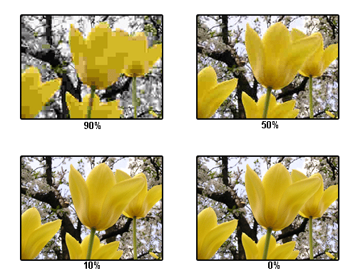

Iets groots opslaan kost heel veel geheugen. Ook kost het veel tijd om bestanden te downloaden (lees hier hoe dit wordt opgeslagen). Hier is een oplossing voor bedacht: bestandscompressie. De bestandsgrootte wordt hiermee verkleind en daardoor raakt je opslagruimte minder snel vol. Ook de tijd om het bestand te downloaden wordt hierdoor korter. Er bestaan twee verschillende soorten bestandscompressie: lossy compression en lossless compression.
Bij lossy compression wordt informatie uit het originele bestand aangepast en verwijderd. De omvang van het bestand wordt hierdoor kleiner. In veel afbeeldingen zitten ontzettend veel verschillende kleurtinten die met het oog niet te onderscheiden zijn. Door minder verschillende tinten te laten voorkomen, wordt de ruimte die de afbeelding/video inneemt minder groot. Wel gaat hierdoor de kwaliteit achteruit. In het plaatje met de bloem zie je dat hoe verder de compressie gaat, hoe verder de kwaliteit van de afbeelding achteruit gaat. Wel zie je dat in het begin het verschil bijna niet te zien is.
Bij lossless compression wordt geen informatie verwijderd en de originele kwaliteit wordt niet beïnvloed. Hierbij worden de pixels die naast elkaar zitten en dezelfde kleur hebben, anders opgeslagen. Als er in een afbeelding 4 pixels dezelfde waarde (36) hebben, wordt dit opgeslagen als (4,36), terwijl dit normaal opgeslagen zou worden als (36,36,36,36). Lossless compresion neemt dus veel minder opslagruimte in. Een voordeel is dus dat de kwaliteit niet naar beneden gaat. Een ander voordeel hiervan is dat het altijd weer kan worden teruggedraaid. Dit is bij lossy compression niet mogelijk, omdat hierbij informatie verwijderd is.
Een lossy comperssion-methode voor het comprimeren van muziek is MP3. Hierbij wordt een deel van de muziek verwijderd. Dit is mogelijk, omdat mensen tot ongeveer 20 kHz kunnen horen. Alles wat hoger is dan 16 kHz wordt verwijderd in de muziek, maar dit valt niet op. De bitrate van de muziek wordt uitgedrukt in kilobits per seconde (kbps). Dit bestaat uit de sample rate vermeningvuldigd met de hoeveelheid bits deze wordt opgeslagen. Muziek die nog niet gecomprimeerd is, heeft een sample rate van 44.100 Hz. Meestal worden hier 32 bits voor gebruikt om dit op te slaan. De bitrate is dus: 44.100*32=1.411,2 kbps. Als dit wordt gecomprimeerd naar 256 kbps, hoort een mens geen verschil. Pas als dit is teruggebracht naar 128 kbps, is het mogelijk om wat rare klanken te horen.
Een uur aan niet-gecomprimeerde muziek kost ongeveer 700 MB aan opslagruimte. Zodra een liedje van 1 minuut is gecomprimeerd naar 128 kbps, kost dit ongeveer 1 MB. Dit is een groot verschil. 1 uur aan muziek kost na het comprimeren dus 60 MB I.P.V. 700. Dit laat zien dat ht comprimeren van muziek veel minder opslagruimte in beslag neemt.